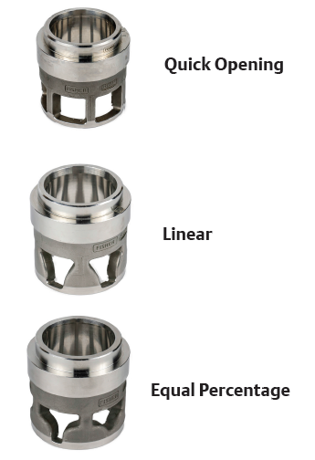

ch2 pass: tmpl-compare; 40+41+42 consolidated
Cage-Characterised Flow
| Characteristic | Cage window | Typical service |
|---|---|---|
| Quick-opening | Square-edge | On/off, dump |
| Linear | Pear-shaped | Constant ΔP (e.g. level) |
| Equal percentage | Offset pear-shaped | ΔP falls as flow rises — default |
